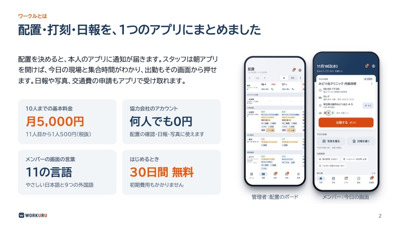
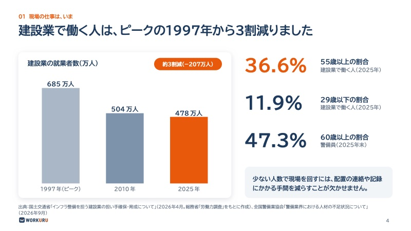
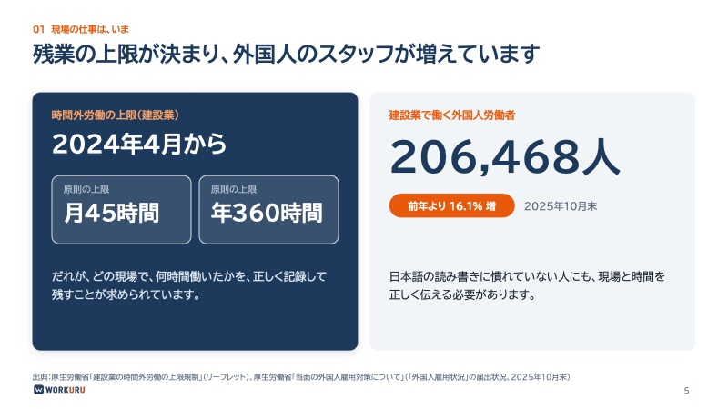
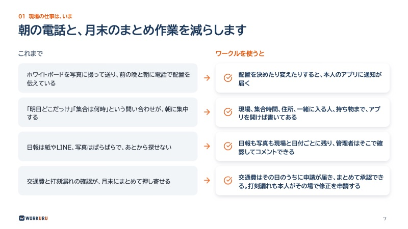
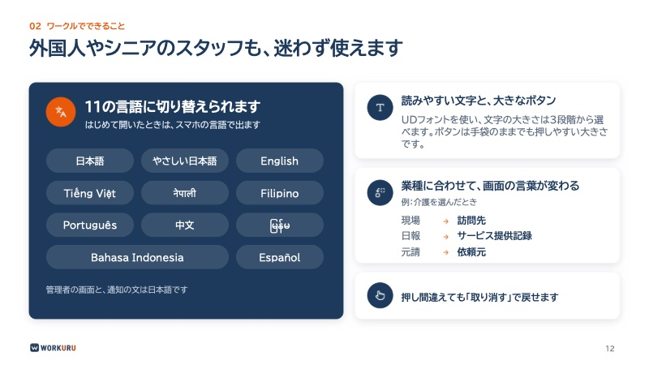
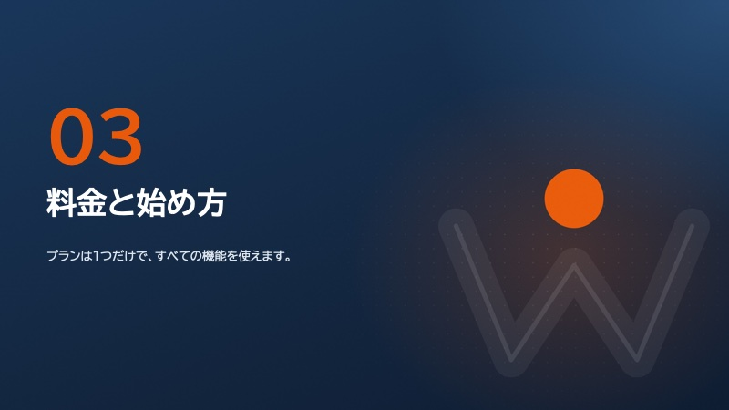
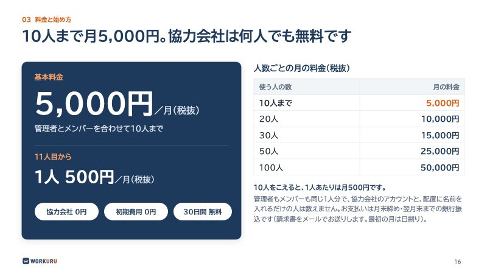
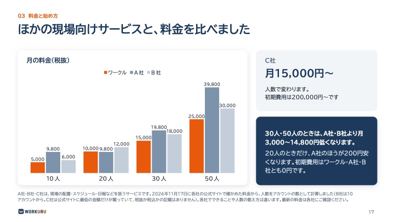
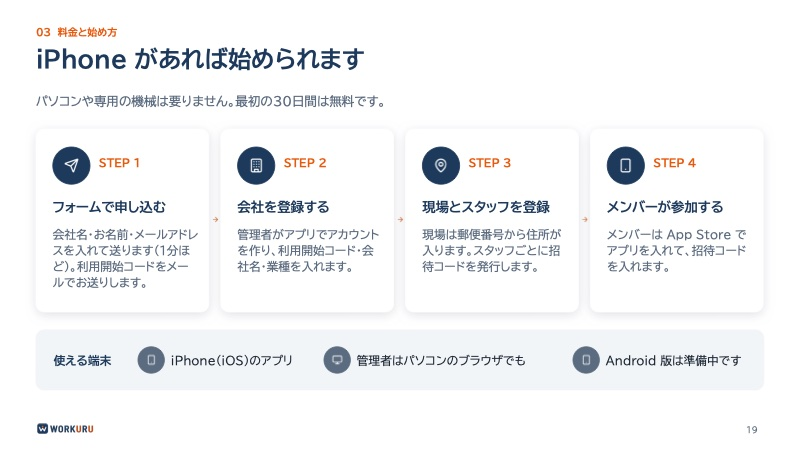

U1
エージェント開発環境の整備
チームがエージェントを安心して使い始められる土台をつくります。個人の使いこなしに頼らず、リポジトリに仕組みとして残します。
CTXTOOLGUARD
- CLAUDE.md・ルールの設計
- スキル／フックの実装
- MCP・社内ツールの接続
- 権限設計とセキュリティ規定への適合
HARNESS ENGINEERING × SYSTEM INTEGRATION
CN-01ハーネスとは
同じモデルでも、何を読ませ、何を使わせ、どこで止め、どう確かめるかで、出てくる成果は別物になります。その配線一式を設計するのが、ハーネスエンジニアリングです。METASYSTEM は、6本の回路で考えます。
CLAUDE.md、規約、設計書、既存コード。エージェントが最初に読むべきものを、読める形と量に整えます。
MCP、CLI、社内 API。調べる・動かす・確かめる手段をつなぎ、人の手による受け渡しを減らします。
権限、サンドボックス、フック。やってはいけない操作は、注意書きではなく仕組みで止めます。
テスト、静的解析、レビュー。合否を自分で確かめられる回路を組み、通るまで走らせます。
決めたこと、手順、つまずいた所。次のセッションと次の担当者に引き継がれる形で残します。
承認、レビュー、最終責任。人が握るべき所を決め、そこへ確実に戻ってくるようにします。
行に触れると、その回路だけを図面の上で追跡できます。
CN-02提供していること
一時的な増員でも、特定の工程だけの支援でも。既存の体制・規約・レビューの進め方に合わせて結線します。
U1
チームがエージェントを安心して使い始められる土台をつくります。個人の使いこなしに頼らず、リポジトリに仕組みとして残します。
CTXTOOLGUARD
U2
要件定義から保守運用まで、各工程の成果物づくりにエージェントを通します。成果物は、既存の規約・様式・レビュー体制に合わせます。
EVALMEMHITL
U3
読める人が減ったコードとドキュメントを、エージェントで読み解きます。仕様書に起こし、移行とモダナイゼーションへつなげます。
CTXTOOLEVAL
BUS ／ 対応工程 — どこからでも参画できます
CN-03自社プロダクト
人に勧める配線は、まず自分の現場で通電させます。WORKURU は、METASYSTEM が企画から設計・開発・運用まで手がける SaaS で、ハーネスエンジニアリングの実践の場でもあります。くわしくは、紹介資料をそのままご覧ください。
WORKURU ワークル



















表紙：明日の配置は、アプリで伝える。ワークル（WORKURU）のご紹介
CN-04実績と仕様
ハーネスは、現場を知らなければ組めません。官公庁・金融・生保・EC・小売の基幹システムで、要件定義から保守運用までを一気通貫で担当してきました。品質・納期・報連相。その基準電位の上に、エージェントを載せます。
B 黒
GND
10年
システム開発の実務経験8+件
参画プロジェクト6工程
要件定義から保守運用までLOAD LIST ／ 主な実績
現行業務フローのヒアリングから、要件定義書・RFP 対応資料を作成。100名規模の体制でアーキテクトを担当。
画面設計書・機能設計書を規定フォーマットで作成。レビュー指摘への対応まで一貫して担当。
現行機能の分析、技術選定、クラウド環境での PoC、入札に向けた RFP 作成。
既存システムのリプレースで、移行対象・移行方式・切替手順の要件を整理。
詳細設計書に基づく製造と単体テスト。コーディング規約とレビュー体制に準拠。
影響範囲の調査から改修、回帰テストまで。障害の再発防止策を提案。
環境構築、デプロイ自動化、監視設定など、開発基盤まわりを整備。
テストケースの設計と実施、不具合管理表の運用。テスト消化率を見える化。
ほかに、障害の一次切り分けと復旧、定期リリース、運用手順書の整備、監視・アラート対応などの保守運用。
SPECIFICATIONS ／ 仕様
CN-05お問い合わせ
エージェントを現場に入れたい。どこかの工程が詰まっている。古いシステムを読み解きたい。——状況をそのままお聞かせください。スキルシートのご提示から面談、条件のご相談まで、すぐに対応します。
未接続 — OPEN
プラグをつまんで、左のコネクタへ。クリックでも挿さります。